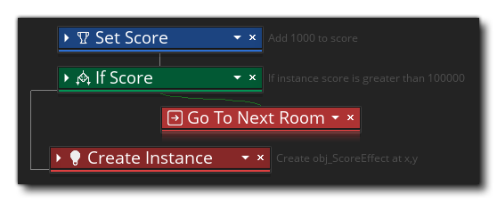

When working on your DnD™ code, you can click the right mouse
button  on the action, on the workspace, or on
the text in the shortlist on the left to open up the Right Mouse
button menu:
on the action, on the workspace, or on
the text in the shortlist on the left to open up the Right Mouse
button menu:
This menu has the following options:
- Cut / Copy / Paste: This will permit you cut, copy or
paste any action that is selected in the workspace. Note that you
can use
 +
+  outside of the actions and drag,
or use
outside of the actions and drag,
or use  /
/ + on
individual actions, to select more than one and apply the command
to all of them.
+ on
individual actions, to select more than one and apply the command
to all of them.
- Comment / Remove Comment: This option permits you to add
and remove comments from your DnD™ code blocks. When you select
Comment, text editor will be opened to the right of the
selected DnD™ block, and there you can add any text you require,
whether it be a reminder to change something, or a helpful comment
for a tutorial, or even instructions for your teammates:
Once you have added the comment, you can click on it and drag it to position it vertically and horizontally - although only to the right of the parent node - and collapsing the DnD™ node will also collapse the comment and show a summary of its contents (in which case it cannot be repositioned). If the comment is no longer required, then you can either delete all the text in the comment, or use the Remove Comment option from the menu. Note that when you copy a node, the comment will be copied along with it, and if you convert the node from DnD™ to GML, then comment will be preserved and added to the GML that is created, as illustrated in the image below: As mentioned above, a comment can only be applied to a single node, but you can expand it to cover multiple nodes by simply adding in line breaks to extend it - although this may require you to re-position the comment to prevent overlaps with subsequent nodes: Once a comment has been added, you can select the "Comment" option again from the RMB menu or you can double click on it to enable editing.
- Disable / Enable: These commands can be used disable or
enable the action (or actions) selected. When an action is
disabled, it is still visible in the workspace but it will not
run when you compile the game. In this way you can add/remove
actions for testing and debugging. The image below shows some DnD™
code with actions disabled:
 You
can see that the actions "If Score" and "Go To Next
Room" have been disabled - they have been grayed out, visually
- and so they will be skipped when the game is tested or
compiled.
You
can see that the actions "If Score" and "Go To Next
Room" have been disabled - they have been grayed out, visually
- and so they will be skipped when the game is tested or
compiled.
- Toggle Breakpoint: This command will toggle a
breakpoint on or off for the selected action. A breakpoint
is simply a point in the DnD™ code where the debugger should stop
when the game is being run in Debug Mode. An
action with a breakpoint assigned to it will be highlighted, as
shown in the image below (the "If Health" action has been
set as a breakpoint):

- Delete All Breakpoints: With this command you can remove
all breakpoints form the DnD™ code.
- Collapse All / Expand All: DnD™ actions can be either
collapsed or expanded, where a collapsed action will simply show
the name of the action but not any of the internal values thus
maximising the available space for the workspace. For example:
 As you can see, the actions take up much
less space, and you can still see what they do from the short
description given to the right. You can select the "Expand All"
option to undo this for every node in the workspace.
- Reset Layout: This will reset the DnD™ workspace,
setting the zoom level to 100%, focusing on the currently selected
action, and expanding any (and all) collapsed actions too.
- Live Preview: When you select this option, you will
enable or disable the DnD™ to GML (GameMaker Language) code preview
window. This is explained in more detail on the page Changing DnD™ To Code.
- Convert To GML: This will convert all your actions in
the current event to GML (GameMaker Language) code. Be very
careful with this as you cannot convert GML back into the DnD™
actions that it was created from. You can convert the event
back to a DnD™ event from code, but any code will simply be wrapped
in an
Execute Code action. This is explained in more detail on
the page Changing DnD™ To Code.
- Window: This section opens the following sub-menu:
The menu items available here are:
- Go To Object: This will pan the workspace to the object that is calling the event
- Open Inherited Event: This option is only available if the object being edited is a child of a parent object, and will open the event being edited of the parent object and pan the workspace to it.
- Single Pane / 2 Columns / 3 Columns: These options can
be used to split the current worskspace into 1, 2 or 3 different
"panes". Each pane is a seperate workspace that can have scripts or
events dragged onto them so you can edit and compare 2 or more DnD™
code blocks at a time. The image below shows two scripts in one
window shown in their own workspace pane:

The following two options are only available when the RMB menu is opened on a DnD™ node:
- Pan: When selecting this option on any node, the
workspace will pan to ring that node to the center.
- Show Help...: Selecting this will open the Manual in a
new workspace on the page relevant to the node that has been
selected. You can also achieve the same results by using
 on the node.
on the node.